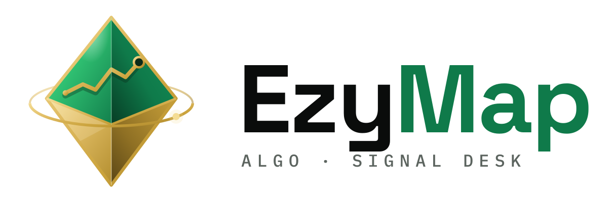

Motion studio
Preview, scrub, and frame trading scenes for live interfaces and video.
Signal stack. Three layers fan out to reveal the market bars.
Editable 3D models
Import both files from each pair into Blender or another OBJ editor.

Preview, scrub, and frame trading scenes for live interfaces and video.
Signal stack. Three layers fan out to reveal the market bars.
Import both files from each pair into Blender or another OBJ editor.